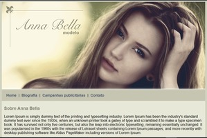
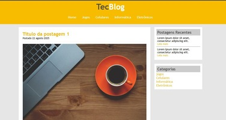
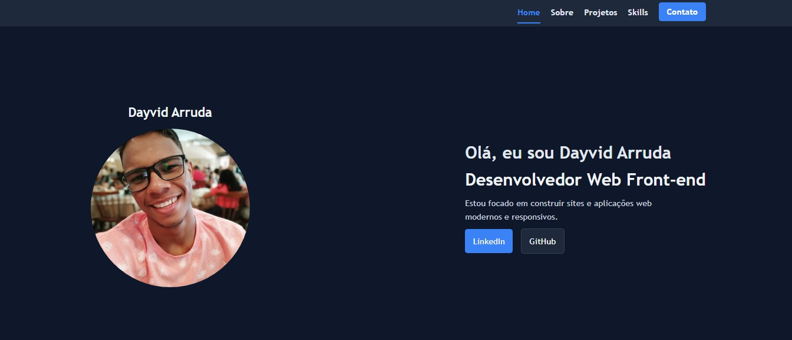
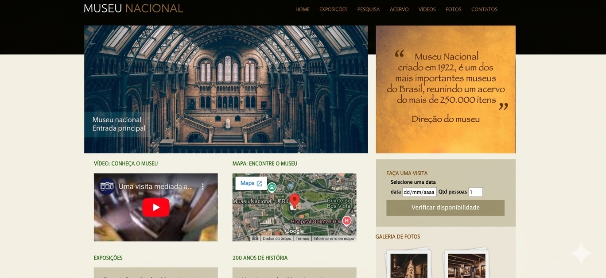
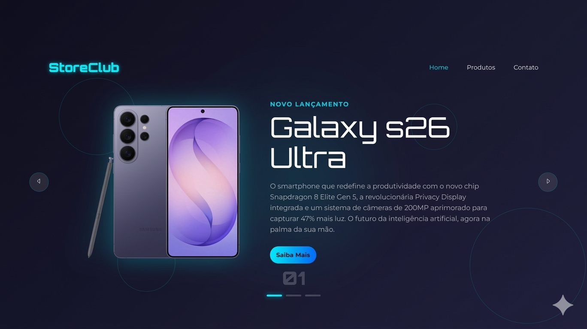
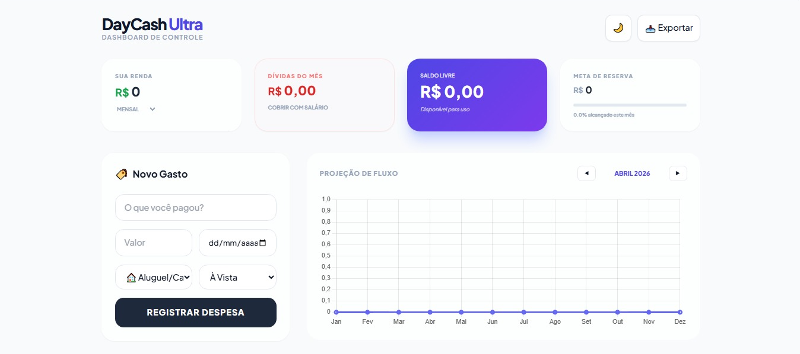

Meus Projetos
Projeto - Unes Universidade
Site educacional fictício desenvolvido para prática de front-end, simulando um ambiente institucional universitário. O projeto envolve múltiplas páginas e organização de conteúdo, aplicando conceitos de estruturação semântica e estilização.

Projeto - Anna Bella
Site portfólio fictício desenvolvido para praticar HTML e CSS, apresentando informações profissionais de forma elegante e organizada. O projeto demonstra técnicas de design responsivo e estruturação semântica.

Projeto - TecBlog
Blog de tecnologia desenvolvido para praticar estruturação de conteúdo, categorias de posts e layout de blog responsivo. O projeto aplica conceitos de SEO e uma boa hierarquia visual para fins educacionais.
Projeto - Formulário
Projeto front-end desenvolvido para praticar a criação de formulários web e organização de interfaces. O foco foi aplicar estruturação semântica em HTML e estilização com CSS, buscando clareza visual e boa experiência do usuário.

Projeto - Portfólio
Projeto desenvolvido para apresentar meus trabalhos e habilidades em desenvolvimento front-end. Este portfólio foi estruturado para destacar projetos, informações pessoais e formas de contato, com foco em um layout simples, profissional e responsivo.

Projeto - Museu Nacional
Site institucional desenvolvido como projeto de estudo em front-end, com o objetivo de apresentar informações de forma clara e organizada. O projeto explora a criação de layouts estruturados, uso de imagens e organização de seções informativas.

StoreClub – Projeto de E-commerce
O StoreClub é um projeto de e-commerce desenvolvido com foco em prática de estruturação front-end, organização de arquivos e experiência do usuário. A aplicação simula uma loja virtual de produtos tecnológicos, contendo página inicial, listagem de produtos e página de contato.

DayCash Ultra pro - Fluxo de Caixa
O DayCash é um projeto de gestão financeira desenvolvido com foco em prática de estruturação front-end, organização de arquivos e experiência do usuário. A aplicação simula um sistema de controle de fluxo de caixa para empresas.